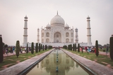

Gorgeous Sites

-new.jpg)
-new.jpg)
Taj Mahal
Gateway of India
The culture of India refers collectively to the thousands of distinct and unique cultures of all religions and communities present in India. India's languages, religions, dance, music, architecture, food and customs differ from place to place within the country. Indian culture, often labeled as an amalgamation of several cultures, spans across the Indian subcontinent and has been influenced by a history that is several millennia old. Many elements of India's diverse cultures, such as Indian religions, philosophy, cuisine, languages, dance, music and movies have a profound impact across the Indosphere, Greater India and the world.
Diwali, Divali, Deepavali is the Hindu festival of lights, usually lasting five days and celebrated during the Hindu Lunisolar month Kartika (between mid-October and mid-November). One of the most popular festivals of Hinduism, Diwali symbolizes the spiritual "victory of light over darkness, good over evil, and knowledge over ignorance".

Holi is a popular ancient Hindu festival, originating from the Indian subcontinent. Holi is popularly known as the Indian "festival of spring", the "festival of colours", or the "festival of love". The festival signifies the arrival of spring, the end of winter, the blossoming of love, and for many a festive day to meet others, play and laugh, forget and forgive, and repair broken relationships. It lasts for a night and a day, starting on the evening of the Purnima (Full Moon day) falling in the Vikram Samvat Calendar, in the Hindu calendar month of Phalguna, which falls around middle of March in the Gregorian calendar.
Independence Day is annually celebrated on 15 August, as a national holiday in India commemorating the nation's independence from the United Kingdom on 15 August 1947, the day when the UK Parliament passed the Indian Independence Act 1947 transferring legislative sovereignty to the Indian Constituent Assembly. India still retained King George VI as head of state until its transition to full republican constitution. India attained independence following the Independence Movement noted for largely non-violent resistance and civil disobedience.
Raksha Bandhan, also Rakshabandhan, is a popular, traditionally Hindu, annual rite, or ceremony, which is central to a festival of the same name, celebrated in India, Nepal and other parts of the Indian subcontinent, and among people around the world influenced by Hindu culture. On this day, sisters of all ages tie a talisman, or amulet, called the rakhi, around the wrists of their brothers, symbolically protecting them, receiving a gift in return, and traditionally investing the brothers with a share of the responsibility of their potential care.